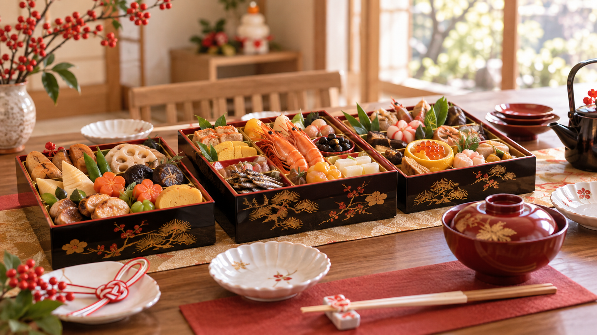
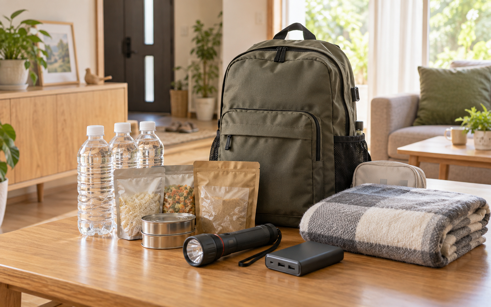
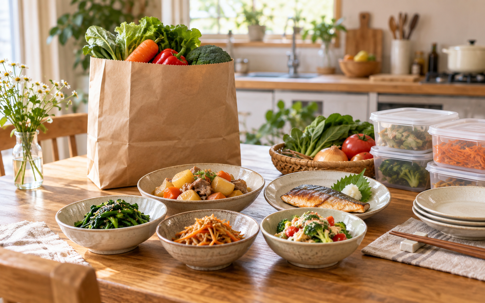

EIJI’S LIFE NOTES
PR｜アフィリエイト広告を含みます
忙しい毎日に、
選ぶ手間を少なく。
年末の食卓、もしもの備え、平日のごはん。
「うちなら何を選ぶ？」がすぐ見えるように、
家族の暮らしに合わせた入口をまとめています。
暮らしの紹介帖 / 01
いつもの暮らしから、少しずつ。
FIND YOUR THEME
いま困っていることから選ぶ。

季節の支度01 / おせち
家族で囲む、お正月の食卓。
年末の準備を軽くしたい。人数・受け取り日・冷蔵庫の空きから、おせちを見比べる。
年末の食卓を選ぶ →
もしもの備え02 / 防災グッズ
家族の備えを、ひとつずつ。
家の備えに足りないものを知りたい。持ち出し用品・トイレ・食事・電源から考える。
もしもの備えを見る →
毎日のごはん03 / 宅配食
ごはん作りを、少しラクに。
平日のごはんを少しラクにしたい。作り置き・ミールキット・冷凍食を手間別に選ぶ。
ごはんの負担を減らす →おせちの食卓画像・防災・宅配食のイラストはイメージです。実際の商品写真ではありません。
ABOUT THIS SITE
「うちにはどうだろう？」を大切に。
栄次が、家族との暮らしをテーマにまとめる紹介サイトです。価格だけでなく、人数や置き場所、準備の手間も選ぶ手がかりにしています。
実際に使ったレビューと、公式情報をもとにした紹介を区別して掲載します。購入・配送・返品のお手続きは、リンク先の販売元でご確認ください。